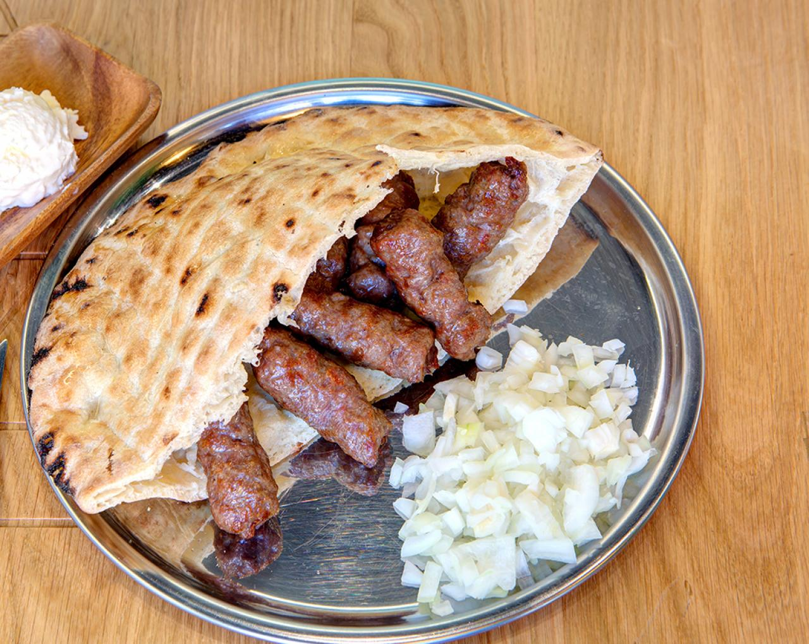
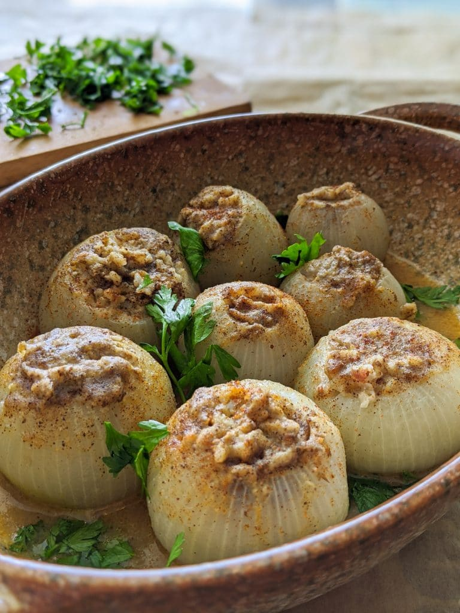

Povijest ishrane na bosansko-hercegovačkim prostorima datira još od antičkog doba, klasičnog Rima i Vizantije, preko turskog i austrougarskog perioda do savremenog doba. Specifičnu notu bosanskohercegovačkim jelima daju i prehrambeni običaji koji svoje izvorište imaju u islamu, pravoslavnoj, katoličkoj i jevrejskoj vjeri. Tako je savremena izvorna bosanska hrana dio kulturno-povijesnog nasljeđa i mješavina je autentičnih bosanskih jela, tradicionalno turskih, arapskih, austrougarskih, jevrejskih i drugih prehrambenih običaja.
Specifičnost i vrijednost bosansko-hercegovačkih jela je baš u tom orijentalnom i zapadnjačkom, a i vjerskom nasljeđu. Zbog toga se danas bosanska kuhinja puno razlikuje od arapske, austrijske, mađarske, ali i od turske i arapske bez obzira što postoje jela koja potiču kako iz Turske i drugih kuhinja. Autentični objekti u kojima se služe tradicionalna ishrana su aščinice, ćevabdžinice i buregdžinice. U tradicionalnoj bosanskoj kuhinji koristi se i posebno suđe. Takvi su sač, peka, dagara, pršulja, lonac, tepsija itd.
Kada se govori o karakteristikama bosanske kuhinje gastronomski stručnjaci kažu da ono što ovu kuhinju čini posebnom jeste činjenica da se vrlo malo koristi tzv. zaprška od brašna i masnoće. Jela sa zaprškom su gušća i sastojci su intenzivnije povezani. No, u bosanskoj kuhinji koristi se drugi princip i filozofija pripremanja hrane. Jela su zato laganija, a doživljaj ukusa svakog pojedinog sastojka jači.
Osnovna karakteristika bosanske kuhinje je polagani način pripremanja jela, bez mnogo žurbe, ali sa mnogo strpljenja, pažnje i ljubavi. Spori način kuhanja danas je jedan od glavnih trendova u svjetskoj gastronomiji. Ono što jelima daje karakterističan i odličan ukus je fino usklađeni odnos između povrća, mesa i začina.
Po ovome, bosanska kuhinja je bliska francuskoj kuhinji. Razlika je u tome što u bosanskoj kuhinji u pravilu nema posebnih umaka, već se oni stvaraju u samom jelu na bazi juhe i dodataka u toku kuhanja ili na samom kraju pripremanja obroka. Kuhana ili dinstana bosanska jela u većini slučajeva su lagana, pošto se pretežno kuhaju i dinstaju s malo vode, pa tako imaju prirodni sok, odnosno umak koji u sebi nema nimalo zaprške. Orijentalni začini se dodaju u malim količinama te oni ne umanjuju slasti i okus mesa.
Od začina najčešće se koristi mljevena paprika, biber, peršun, lovorov list i celer. Kao dodatak jelima u bosanskoj kuhinji često se koriste mlijeko, kajmak i pavlaka. Slatkim jelima se dodaju cimet i klinčić. Jela od mesa su od piletine, govedine ili jagnjetine. Za bosansku kuhinju specifično je pripremanje jela ispod sača, odnosno peke, pri čemu se pripremljene namirnice, poklopljene metalnim zvonom, spremaju u žaru.
Iako je tradicionalna bosanska kuhinja karakteristična po sporom načinu pripremanja jela, jako je zanimljivo da, uprkos svemu tome, možda i najpoznatije jelo u Bosni dolazi – sa roštilja. Riječ je o ćevapima, deliciji sačinjenoj od više vrsta mljevenoga mesa, najčešće posluženom s lukom i uz posebnu vrstu hljeba – somun. Naziv dolazi od turskog «kebapa» i danas ćevapa ima u gotovo svim balkanskim državama, ali najpoznatiji su upravo oni iz Bosne i Hercegovine. Recepti su različiti i često se čuvaju kao najstroža tajna.
Ćevapi
Uprkos njihovoj jasnoj turskoj provenijenciji, bosanski ćevapi su izvor velikog nacionalnog ponosa i omiljeno jelo u zemlji. Ove sitne, ručno valjane kobasice od mljevenog mesa najčešće se pripremaju od mješavine govedine sa drugim mesom, začinjene su mješavinom različitih začina. Obično češnjak, so, crni biber, ponekad paprika ili ljute papričice
Pite
U bosanskoj kuhinji pite se smatraju prijelaznim jelima i prave se na mnogo načina. Mogu biti slane, poluslane, kisele i slatke. Iako su najpoznatije burek-pite, sirnice, zeljanice, tikvenice, krompiruše... pite se prave, takoreći, od svega.
Čorbe
U svakodnevnoj tradicionalnoj ishrani Bosanaca i Hercegovaca, čorbe zauzimaju značajno mjesto. Obavezno se jedu uz glavno jelo, ali čorbe egzistiraju i kao samostalna jela, koja se uzimaju za doručak. Tada se one prave nagusto, od komadića mesa, priređene na mnogobrojne načine: s telećim, goveđim, jagnjećim ili kokošijim mesom.
Dolma
Dovoljno je reći "dolma" i svako ko poznaje bosansku tradicionalnu kuhinju sjetit će se mnogih ukusnih jela u kojima su povrće i mljeveno meso glavni sastojci. Istraživači kuharskih tradicija BiH došli su do zaključka da su dolme u naše krajeve pristigle sa Orijenta. Najpopularnije dolme u bosanskoj kuhinji su punjena paprika, punjena tikvica, punjeni luk, punjena rajčica, japrak te sarma.
Pilav
Tradicionalna bosanska kuhinja ne može se ni zamisliti bez pilava, jela od gusto kuhane riže, koje se priprema u stotinu varijanti i koje je neizostavno u svečanim i blagdanskim prilikama. Nekada se "veliki pilav" obavezno pravio poslije uspješnih polaganja zanatskih ispita, za svadbene večere ili za neka druga porodična slavlja.
Tufahija
Tufahija je bosanska nacionalna slastica porijeklom iz Perzije. U Bosnu i Hercegovinu je najvjerovatnije došla sa Osmanlijama. Tufahija označava slatko jelo od kuhanih jabuka čvršće konzistencije filovanih finom kremom od mljevenih oraha ili badema, slatke pavlake i šećera, ukrašeno šlag-pjenom i višnjom na samom vrhu.
Tulumba
Tulumba je desert dubokog prženja koji se nalazi u osmanskoj kuhinji i regionalnim kuhinjama bivšeg Osmanskog carstva. To je prženo tijesto natopljeno agdom. Napravljena je od beskvasnog tijesta s malim ovoidnim oblikom s obodima duž njega pomoću vrećice za tijesto ili preše za kolače s prikladnim krajnjim komadom. Prvo se prži do zlatne boje, a zatim se preko njega ulije agda kad je još vruće. Servira se hladno.
Baklave
Baklava je kolač orijentalnog porijekla koji se pravi slaganjem jufke tanko razvijenog tijesta, u nekoliko, obično desetak i više slojeva između kojih se dodaje smjesa mljevenih oraha i naizmjenično sitno ribanog tijesta tirita. Reže se na komade koji su slični rombu. Poslije dužeg pečenja na niskoj temperaturi zaljeva se agdom. Agda je kuhana smjesa vode i šećera. Baklava je tradicionalno jelo na Balkanu, kao i na Orijentu. Smatra se da porijeklo ima iz Armenije, ali zbog mnogobrojnih varijacija, postoje pretpostavke da potiče iz Arabije, kao i iz Grčke. Baklava se u Bosni i Hercegovini tradicionalno smatra kolačem za posebne praznike, te je Bošnjaci pripremaju za Bajram, dok je Hrvati i Srbi, u dijelovima srednje Bosne, Posavine i Slavonije, pripremaju za Božić.
Hurmašica
Hurmašica je vrsta zalivenog kolača, prisutna u bosanskoj i srpskoj kuhinji, porijeklom s Orijenta, čiji su osnovni sastojci brašno, šećer, maslac, jogurt, koji se poredaju u tepsiji u obliku hurme, odakle je dobiveno ime hurmašica, a nakon pečenja zaliju agdom.
Kadaif
Kažu da kadaif potječe iz Palestine, ali je na područje Bosne i Hercegovine stigao dovoljno davno da ga se smatra domaćim specijalitetom. Ova tradicionalna poslastica priprema se u najsvečanijim prilikama. Ipak, recept je veoma jednostavan, a koristi se nekoliko jednostavnih i uglavnom lako dostupnih sastojaka, a priprema ne uključuje nikakve zahtjevne postupke.Sirov kadaif se slaže u maslacem namazanu tepsiju. Između dva sloga sirovog kadaifa staviti orahe, grožđice i tanke kriške maslaca. Tako pripremljen kadaif staviti u rernu i peći. Za kadaif se kao i za baklavu koristi preljev – agdu. Ohlađen kadaif se reže na kocke.
Kafa
Bosna i Hercegovina ima dugu tradiciju pijenja kafe, koje je u našu zemlju stiglo sa osmanskim uticajima sa Orijenta. Tradicionalna bosanska kafa sprema se kuhanjem sitno mljevene kafe u džezvi ili nekoj drugoj, sličnoj manjoj posudi za kuhanje. Najčešće se poslužuje u tradicionalnim bosanskim fildžanima, ili u šoljicama. Alternativno ime joj je i crna kafa. Konvencionalna kafa može biti duža ili kraća, zavisno od količine vode u šoljici kafe standardne veličine.